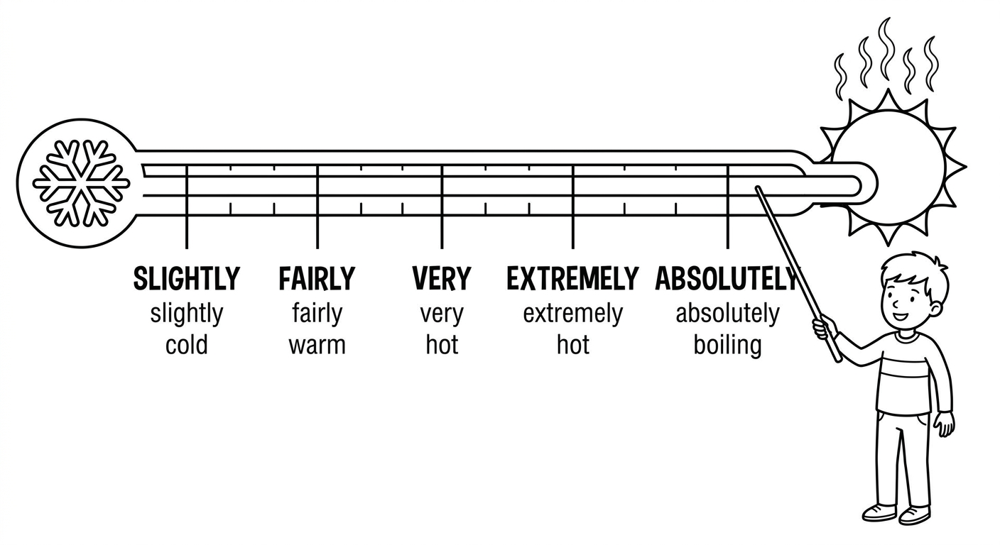
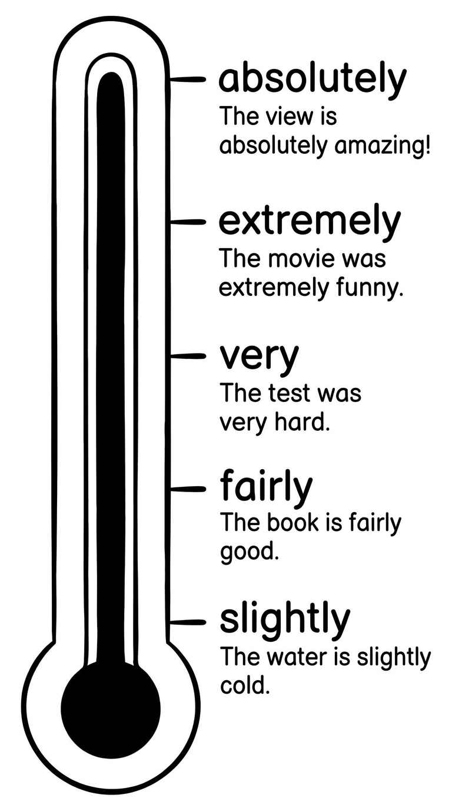
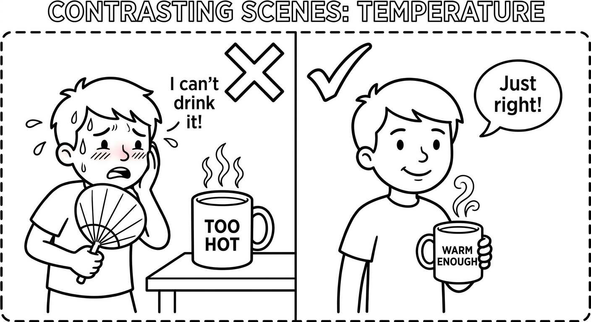
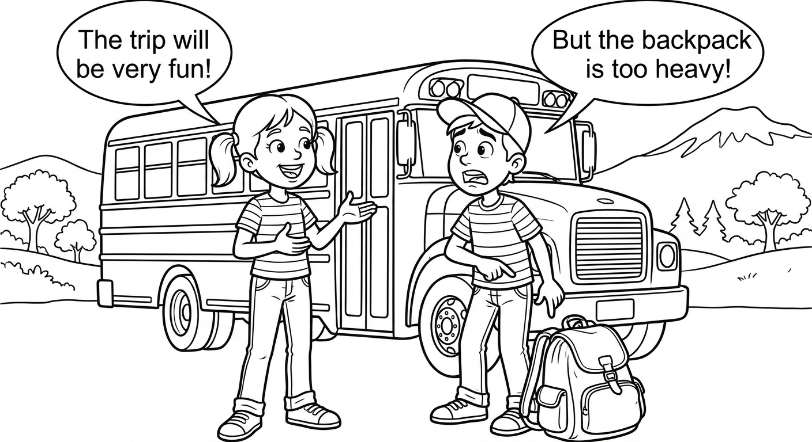
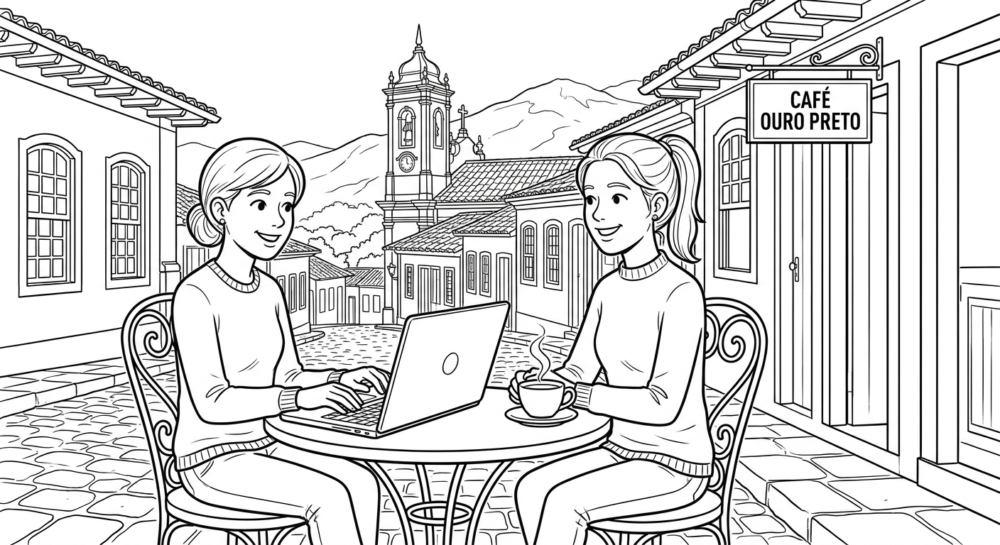

Intensifiers
Learn how to use intensifiers to make your adjectives stronger or weaker. Master the difference between "very" and "too", learn when to use "enough", and discover which intensifiers go with which adjectives.

Common Intensifiers
Intensifiers modify adjectives to make them weaker or stronger. Here is the scale from weakest to strongest:
- a little / slightly (um pouco / ligeiramente) — weakest
- fairly / quite / rather / pretty (bastante / razoavelmente) — moderate
- very / really (muito) — strong
- extremely / incredibly (extremamente / incrivelmente) — very strong
- absolutely (absolutamente / completamente) — strongest
Intensifiers always come before the adjective they modify:
- very tall — muito alto
- really good — muito bom / realmente bom
- extremely hot — extremamente quente
- quite difficult — bastante difícil
Structure: Subject + verb + intensifier + adjective
Example: The movie was really interesting. (O filme foi muito interessante.)
Intensifiers Vocabulary
| Intensifier | Tradução | Intensity Level | Example |
|---|---|---|---|
| a little | um pouco | weak | I'm a little tired. |
| slightly | ligeiramente | weak | It's slightly cold today. |
| fairly | razoavelmente | moderate | The test was fairly easy. |
| quite | bastante / razoavelmente | moderate | She is quite smart. |
| rather | bastante / um tanto | moderate | The movie was rather long. |
| pretty | bastante (informal) | moderate | The food was pretty good. |
| very | muito | strong | He is very tall. |
| really | muito / realmente | strong | This book is really interesting. |
| extremely | extremamente | very strong | The exam was extremely difficult. |
| incredibly | incrivelmente | very strong | She is incredibly talented. |
| absolutely | absolutamente / completamente | strongest | The show was absolutely fantastic! |

Examples in Context
Lucas is a little nervous about the test.
Lucas está um pouco nervoso com a prova.
The homework was fairly easy.
A lição de casa foi razoavelmente fácil.
The restaurant is quite popular in our neighborhood.
O restaurante é bastante popular no nosso bairro.
Beatriz is very happy with her new school.
Beatriz está muito feliz com a nova escola.
The concert was really exciting!
O show foi muito empolgante!
It was extremely cold in Curitiba last winter.
Estava extremamente frio em Curitiba no inverno passado.
The view from Pão de Açúcar is absolutely stunning!
A vista do Pão de Açúcar é absolutamente deslumbrante!
"Quite" can have different meanings depending on the context:
- With gradable adjectives: "quite" = bastante / razoavelmente (moderate intensity). "The film was quite good." = O filme foi bastante bom.
- With non-gradable adjectives: "quite" = completamente (strong intensity). "You are quite right." = Você está completamente certo.
- In British English, "quite" is often weaker than "very". In American English, "quite" is closer to "very".
Suggested time: 25 minutes
L1 note: In Portuguese, "muito" covers a wide range of English intensifiers (very, really, quite, extremely). Help students understand that English has a more precise scale. Ask: "Is it um pouco, bastante, muito, or extremamente?" and then guide them to the corresponding English intensifier.
Activity: Write an adjective on the board (e.g., "cold") and have students create sentences with at least four different intensifiers, noticing how the meaning changes each time.
Fill in the blanks with an appropriate intensifier from the box. Use each word only once.
Word box: a little, fairly, quite, rather, very, really, extremely, absolutely
Choose the best option to complete each sentence.
The weather in Rio is _______ hot in January. (strong intensity)
b) veryThe soup was _______ warm — not hot, not cold. (weak intensity)
c) slightlyGustavo is _______ good at soccer. He plays on the school team. (moderate-to-strong)
a) prettyThe final exam was _______ hard. Only three students passed! (very strong)
b) incrediblyThe movie was _______ long, but I enjoyed it. (somewhat, with a hint of negativity)
a) ratherRead each group of sentences. Number them from 1 (weakest intensity) to 3 (strongest intensity).
a) The coffee is extremely hot.
b) The coffee is slightly hot.
c) The coffee is very hot.
b (1 - weakest) → c (2) → a (3 - strongest)a) The book is really interesting.
b) The book is fairly interesting.
c) The book is absolutely fascinating.
b (1 - weakest) → a (2) → c (3 - strongest)a) The test was quite difficult.
b) The test was incredibly difficult.
c) The test was a little difficult.
c (1 - weakest) → a (2) → b (3 - strongest)a) Larissa is very happy.
b) Larissa is fairly happy.
c) Larissa is extremely happy.
b (1 - weakest) → a (2) → c (3 - strongest)a) The soup is pretty good.
b) The soup is absolutely delicious.
c) The soup is slightly warm.
c (1 - weakest) → a (2) → b (3 - strongest)Too and Enough
"Too" means demais / excessivamente. It always has a negative meaning — something is more than what is good, acceptable, or necessary.
Structure: too + adjective (+ to + verb)
- The coffee is too hot. = O café está quente demais. (I can't drink it.)
- He is too young to drive. = Ele é jovem demais para dirigir.
- This bag is too heavy for me. = Esta bolsa é pesada demais para mim.
"Enough" after an adjective means suficiente / o suficiente. It means something is at the right level.
Structure: adjective + enough (+ to + verb)
- She is old enough to vote. = Ela é velha o suficiente para votar.
- The water is warm enough to swim. = A água está quente o suficiente para nadar.
- Is this box big enough? = Esta caixa é grande o suficiente?
When "enough" is used with a noun, it comes before the noun. It means suficiente / bastante.
Structure: enough + noun
- We have enough money for the trip. = Temos dinheiro suficiente para a viagem.
- There aren't enough chairs for everyone. = Não há cadeiras suficientes para todos.
- Do you have enough time to finish? = Você tem tempo suficiente para terminar?
Use "not ... enough" to say something is insuficiente — it does not reach the required level.
Structure: not + adjective + enough (+ to + verb)
- He is not tall enough to reach the shelf. = Ele não é alto o suficiente para alcançar a prateleira.
- The room is not big enough for 30 students. = A sala não é grande o suficiente para 30 alunos.

Examples in Context
The music is too loud. I can't concentrate.
A música está alta demais. Não consigo me concentrar.
Marcelo is too tired to study tonight.
Marcelo está cansado demais para estudar esta noite.
Ana Clara is smart enough to solve the problem.
Ana Clara é inteligente o suficiente para resolver o problema.
Thiago is not old enough to enter the club.
Thiago não tem idade suficiente para entrar na boate.
We don't have enough water for the whole hike.
Não temos água suficiente para toda a caminhada.
There are enough desks for all the students.
Há carteiras suficientes para todos os alunos.
"Very" ≠ "Too" — This is a very common mistake for Portuguese speakers!
- "Very" = strong intensity, but neutral/positive: "The food is very good." = A comida é muito boa. (positive!)
- "Too" = excessive, always negative: "The food is too salty." = A comida está salgada demais. (negative!)
- "This hotel is very expensive" = é caro, mas talvez eu fique. "This hotel is too expensive" = é caro demais, não vou ficar.
In Portuguese, "muito" can mean both "very" and "too", which causes confusion. Ask yourself: is it a problem or just a description? Problem = too. Description = very.

Suggested time: 30 minutes
L1 note: The word "muito" in Portuguese can translate to both "very" and "too" in English. This is one of the most common sources of confusion for Brazilian learners. Spend extra time on the distinction: "very" = description / "too" = problem. Give pairs of sentences and ask students to identify which is positive and which is negative.
Dialogue activity: Have students read the dialogue aloud in pairs and underline every instance of "too", "enough", "really", and "extremely". Then ask them to create their own mini-dialogue about planning a party or trip using at least three examples of too/enough.
Fill in the blanks with too or enough. Pay attention to the position!
Rewrite each sentence using too or enough, keeping the same meaning.
Example: The bag is so heavy that I can't carry it. → The bag is too heavy for me to carry.
Bruno is so short that he can't reach the top shelf.
Bruno is too short to reach the top shelf. / Bruno is not tall enough to reach the top shelf.Carolina has sufficient money to buy the book.
Carolina has enough money to buy the book.The water is so cold that we can't swim.
The water is too cold to swim (in). / The water is not warm enough to swim (in).Mateus is strong. He can move the table by himself.
Mateus is strong enough to move the table by himself.The exercise is so difficult that I can't do it alone.
The exercise is too difficult for me to do alone. / The exercise is not easy enough for me to do alone.We don't have sufficient chairs for all the visitors.
We don't have enough chairs for all the visitors.Gradable vs Non-Gradable Adjectives
Gradable adjectives (adjetivos gradáveis) can have different levels of intensity. You can be a little tired, very tired, or extremely tired.
Common gradable adjectives: big, small, hot, cold, interesting, difficult, happy, sad, expensive, cheap, important, beautiful, tired, hungry, old, young, tall, short, good, bad
Intensifiers that work with gradable adjectives:
- a little / slightly / fairly / quite / rather / pretty / very / really / extremely / incredibly
Examples:
- very big ✓
- extremely hot ✓
- quite interesting ✓
Non-gradable adjectives (adjetivos não gradáveis) already express an extreme or absolute idea. They are already at the maximum or minimum — you can't make them "more".
Common non-gradable adjectives: perfect (perfeito), impossible (impossível), excellent (excelente), dead (morto), unique (unico), amazing (incrivel), terrible (terrível), enormous (enorme), tiny (minúsculo), freezing (congelante), boiling (fervendo), fantastic (fantástico), delicious (delicioso), exhausted (exausto), starving (morrendo de fome), furious (furioso)
Intensifiers that work with non-gradable adjectives:
- absolutely / completely / totally / utterly
Examples:
- absolutely perfect ✓ (NOT
very perfect✗) - completely impossible ✓ (NOT
very impossible✗) - totally exhausted ✓ (NOT
extremely exhausted✗)
See the Difference
The test was very difficult.
A prova foi muito difícil.
The test was absolutely impossible!
A prova foi absolutamente impossível!
The weather is extremely hot today.
O tempo está extremamente quente hoje.
The weather is absolutely boiling today!
O tempo está absolutamente fervendo hoje!
The answer is very perfect. → The answer is absolutely perfect. ✓
"Perfect" já é o máximo — não se pode ser "muito perfeito".
The food was very delicious. → The food was absolutely delicious. ✓
"Delicious" já é um adjetivo extremo — use "absolutely".
very big ✓ (gradable) → absolutely enormous ✓ (non-gradable)
muito grande → absolutamente enorme
very tired ✓ (gradable) → completely exhausted ✓ (non-gradable)
muito cansado → completamente exausto
"Really" is special! It works with both gradable and non-gradable adjectives:
- really big ✓ (gradable) — muito grande
- really enormous ✓ (non-gradable) — realmente enorme
- really tired ✓ (gradable) — muito cansado
- really exhausted ✓ (non-gradable) — realmente exausto
When in doubt, "really" is a safe choice!
Suggested time: 20 minutes
Activity: Create a matching game with two columns: one with gradable adjectives (big, cold, good, tired, bad, hungry, small, hot) and one with their non-gradable equivalents (enormous, freezing, excellent/perfect, exhausted, terrible/awful, starving, tiny, boiling). Have students match them, then practice: "The room is very cold / The room is absolutely freezing."
L1 note: In Portuguese, "muito" works with nearly all adjectives. Students may need repeated practice to internalize that English distinguishes between gradable ("very big") and non-gradable ("absolutely enormous") adjectives.
Fill in the blank with the correct intensifier: very or absolutely. Remember: use "very" with gradable adjectives and "absolutely" with non-gradable adjectives.
Reading & Writing

Last weekend, my family and I visited Ouro Preto, a historic city in Minas Gerais. It was an absolutely amazing trip! I had been there once before when I was very young, but I didn't remember much. This time, I enjoyed every moment.
We left Belo Horizonte early on Saturday morning. The drive took about two hours. The road through the mountains was really beautiful, with incredibly green hills on both sides. When we arrived, we were slightly tired from the drive, but the city was so charming that we forgot about being tired immediately.
The first thing we noticed was that the streets are extremely steep. My father said they were too steep for my grandmother, so she waited for us at a café while we explored. The colonial churches are absolutely stunning. We visited the Igreja de São Francisco de Assis, which was very impressive. The gold decorations inside were really beautiful. Our guide was extremely knowledgeable and told us fascinating stories about Tiradentes and the Inconfidência Mineira.
For lunch, we went to a restaurant that was quite popular with tourists. The food was absolutely delicious! I had "frango com quiabo" and my mother had "feijão tropeiro". The portions were fairly large — actually, they were too big for us to finish. We were completely full after the meal.
In the afternoon, we visited the Museu da Inconfidência. It was really interesting, but rather sad at the same time. The museum has enough historical artifacts to keep you busy for hours. I was particularly fascinated by the old documents and maps.
The weather was pretty good — not too hot and not too cold. It was warm enough to walk around comfortably, but cool enough that we didn't need sunscreen. The sunset over the mountains was absolutely breathtaking!
On Sunday, we visited a gem mine near the city. The entrance was a little dark and slightly scary at first, but inside it was totally fascinating. The guide showed us incredibly beautiful crystals and explained how they were formed millions of years ago.
I would say Ouro Preto is an absolutely perfect destination for a weekend trip. The city is extremely rich in history and culture. The food is really tasty, the people are very friendly, and the scenery is utterly spectacular. My only complaint is that two days is not enough time to see everything. I definitely want to go back!
Pre-reading activity: Ask students: "Have you ever visited a historic city in Brazil? What did you think of it? Was it very interesting or absolutely amazing?" This activates intensifier vocabulary before reading.
Reading strategy: Have students underline or highlight all intensifiers as they read. Challenge them to find at least 15 different intensifiers in the text. Then ask them to classify each as weak, moderate, strong, or strongest.
Vocabulary support: Pre-teach: steep (íngreme), charming (encantador), knowledgeable (conhecedor), artifacts (artefatos), breathtaking (de tirar o fôlego), gem mine (mina de pedras preciosas).
Read each sentence. Write T (True) or F (False) based on the text.
Answer the questions in complete sentences based on the text. Try to use intensifiers in your answers!
How was the drive from Belo Horizonte to Ouro Preto?
The drive took about two hours. The road through the mountains was really beautiful, with incredibly green hills on both sides.Why didn't Isabela's grandmother explore the streets with the family?
The streets were too steep for her grandmother, so she waited at a café while the family explored.What did Isabela think about the food at the restaurant?
The food was absolutely delicious, but the portions were too big for them to finish. They were completely full after the meal.Would Isabela recommend Ouro Preto as a travel destination? Why or why not?
Yes, she would. She says Ouro Preto is an absolutely perfect destination for a weekend trip because it is extremely rich in history and culture, the food is really tasty, the people are very friendly, and the scenery is utterly spectacular.Write a short review (8–12 sentences) about a place you visited, a movie you watched, or a restaurant you went to. Use at least 8 different intensifiers from this chapter. Underline each intensifier you use.
Ideas to include: How was the experience? What did you like? What was too much or not enough? Would you recommend it? Was anything absolutely amazing or rather disappointing?
My review of: ___________________________________
Answers will vary. Students should write 8-12 sentences using at least 8 different intensifiers. Check for correct use of intensifiers with gradable/non-gradable adjectives, correct position of too/enough, and variety of intensifiers.Suggested time: 35 minutes (15 for reading exercises, 20 for writing)
Writing support: Before students begin writing, brainstorm useful adjective-intensifier combinations on the board. For example: absolutely amazing, really interesting, quite popular, too expensive, warm enough, very friendly, extremely beautiful, rather boring, fairly easy, pretty good.
Peer review: Have students exchange their reviews with a partner. The partner should circle all intensifiers and check: (1) Are there at least 8? (2) Is each one used correctly with the right type of adjective? (3) Is "too" used for negative meanings and "very" for neutral/positive?
Extension: Students can present their reviews to the class, reading them aloud with appropriate intonation to emphasize the intensifiers.